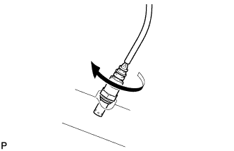
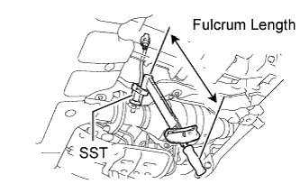
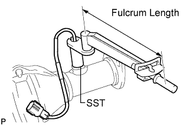

HEATED OXYGEN SENSOR > INSTALLATION |
| 1. INSTALL HEATED OXYGEN SENSOR (for Bank 1 Sensor 2) |
 |
Temporarily install the sensor to the exhaust pipe by hand.
 |
Using SST, tighten the sensor.
 |
Connect the sensor connector.
| 2. INSTALL HEATED OXYGEN SENSOR (for Bank 2 Sensor 2) |
Temporarily install the sensor to the exhaust pipe by hand.
 |
Using SST, tighten the sensor.
| 3. INSTALL FRONT NO. 2 EXHAUST PIPE ASSEMBLY |
Install 2 new gaskets to the front No. 2 exhaust pipe.
 |
Connect the front No. 2 exhaust pipe to the exhaust manifold LH with 2 new nuts.
Connect the front No. 2 exhaust pipe to the center exhaust pipe with the 2 bolts.
 |
Connect the heated oxygen sensor connector.
| 4. INSPECT FOR EXHAUST GAS LEAK |